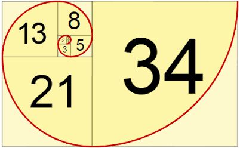

วิชาวิทยาศาสตร์

ดีเอ็นเอ (DNA) คือสารพันธุกรรมที่บรรจุรหัสคำสั่งสำหรับการเจริญเติบโตและการทำงานของสิ่งมีชีวิตแทบทุกชนิด โครงสร้างของดีเอ็นเอมีลักษณะเป็นเกลียวคู่ (Double Helix) ประกอบด้วยเบสสี่ชนิดคือ อะดีนีน ไทมีน กัวนีน และไซโตซีน ที่เรียงตัวกันเป็นรหัสพันธุกรรมเฉพาะของสิ่งมีชีวิตแต่ละตัว การค้นพบโครงสร้างนี้โดยเจมส์ วัตสัน และฟรานซิส คริก ในปี 1953 ถือเป็นจุดเปลี่ยนสำคัญของวงการชีววิทยา เพราะนำไปสู่ความเข้าใจเรื่องการถ่ายทอดลักษณะทางพันธุกรรมจากพ่อแม่สู่ลูก การกลายพันธุ์ที่เป็นต้นเหตุของโรคทางพันธุกรรม รวมถึงเทคโนโลยีการตัดต่อยีนอย่าง CRISPR ที่กำลังปฏิวัติวงการแพทย์และการเกษตรในปัจจุบัน